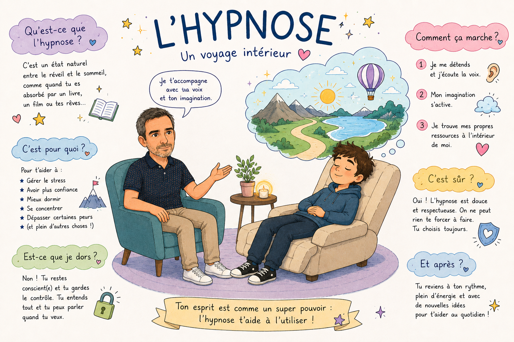

Environnement sûr
Avant toute séance d'hypnose, il est essentiel d'établir une relation de confiance avec l'enfant. Les enfants doivent se sentir à l'aise et comprendre que l'hypnose est un processus sûr et bienveillant.
Hypnose enfant et adolescent
Les enfants ont une imagination riche et une grande capacité à entrer dans l'univers de l'hypnose.
Bien que les principes de base soient similaires à ceux utilisés avec les adultes, l'accompagnement doit être adapté à leur âge et à leur façon de percevoir le monde.
Pour proposer un accompagnement de qualité, je me suis formé auprès de Valérie Roumanoff, hypnothérapeute reconnue et spécialisée en hypnose pour enfant et adolescent.

Déroulement
Avant toute séance d'hypnose, il est essentiel d'établir une relation de confiance avec l'enfant. Les enfants doivent se sentir à l'aise et comprendre que l'hypnose est un processus sûr et bienveillant.
Les objectifs de l'hypnose doivent être adaptés à l'âge de l'enfant et à sa capacité de compréhension : gestion du stress, amélioration du sommeil, confiance en soi ou concentration.
Lorsque l'hypnose est pratiquée avec les enfants, l'engagement et le consentement des parents ou des tuteurs sont essentiels. Les parents sont informés du processus et impliqués dans le suivi.
Les enfants ont une capacité d'attention plus courte que les adultes. Les séances sont donc adaptées, parfois plus courtes et plus fréquentes.
Les enfants sont souvent réceptifs aux histoires et aux métaphores. Les contes ou images imaginaires peuvent guider l'enfant dans son expérience d'hypnose.
L'imagination des enfants est un outil puissant. Elle est utilisée pour explorer des solutions, renforcer les aspects positifs et activer leurs ressources.
Les jeux de rôle et interactions pendant la séance rendent l'expérience plus engageante et plus efficace.